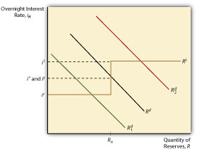

The European Central Bank (ECB) also uses open market operations to move the market for overnight interbank lending toward its target. It too uses repos and reverse repos for reversible, defensive OMO and outright purchases for permanent additions to MB. Unlike the Fed, however, the ECB spreads the love around, conducting OMO in multiple cities throughout the European Union. The ECB’s national central banks (NCBs,) like the Fed’s district banks, also lend to banks at a so-called marginal lending rate, which is generally set 100 basis points above the overnight cash rate. The ECB pays interest on reserves, a central bank best practicePolicies generally considered to be state of the art in a given industry, to be something that nonconforming organizations ought to emulate. the Fed took up only recently.
Canada, New Zealand, and Australia do likewise and have eliminated reserve requirements, relying instead on what is called the channel, or corridor, system. As Figure 16.6 "Paying interest on reserves puts a floor under the overnight interest rate" depicts, the supply curve in the corridor system looks like a weird S. The vertical part of the supply curve represents the area in which the central bank engages in OMO to influence the market rate, i*, to meet its target rate, it. The top horizontal part of the supply curve, il for the Lombard rate, is the functional equivalent of the discount rate in the American system. The ECB and other central banks using this system, like the Fed, will lend at this rate whatever amount banks with good collateral desire to borrow. Under normal circumstances, that quantity is nil because it (and i*) will be 25, 50, or more basis points lower, depending on the country. The big innovation in the channel system is the lower horizontal part of the supply curve, ir, or the rate at which the central bank pays banks to hold reserves. That sets a floor on i* because no bank would lend in the relatively risky overnight market if it could earn a safer, higher return by depositing its excess funds with the central bank. Using the corridor system, a central bank can keep the overnight rate within the bands set by il and ir and use OMO to keep i* near it.
Figure 16.6 Paying interest on reserves puts a floor under the overnight interest rate
